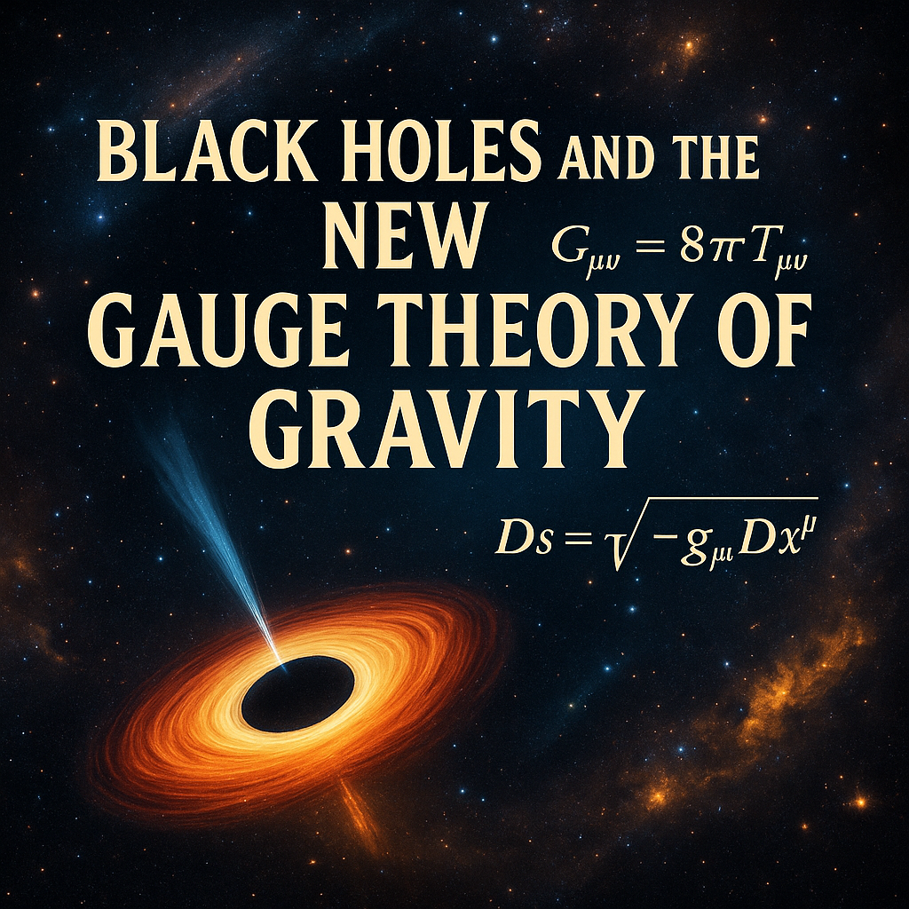

Publicado em 2025-05-08 09:06:28
Por Francisco Gonçalves
Recentemente, o sonho milenar de uma "Teoria de Tudo" — uma fórmula capaz de unificar todas as forças fundamentais da natureza — ganhou novo fôlego com uma proposta ousada dos físicos Mikko Partanen e Jukka Tulkki, da Universidade de Aalto.
Estes investigadores apresentaram uma nova abordagem à gravidade, tratando-a como uma teoria de calibre, tal como as que descrevem as forças eletromagnética, fraca e forte no Modelo Padrão da física de partículas. O objetivo? Integrar finalmente a força gravitacional no mesmo quadro conceptual das restantes, algo que nem Einstein conseguiu concluir.
Mas porque é que isto interessa a quem, como eu, defende que os buracos negros são a força estruturante do universo?
Simples: se esta nova teoria for bem-sucedida — e os primeiros resultados são promissores — ela poderá oferecer uma base matemática e física sólida para a ideia de que os buracos negros não são apenas consequências cósmicas, mas sim agentes primordiais. Formados logo após o Big Bang, ou até mesmo antes, estes objetos podem ter moldado galáxias, influenciado a expansão do universo e criado os efeitos hoje atribuídos à misteriosa "matéria escura".
Partanen e Tulkki propõem também um mecanismo de renormalização que poderá resolver os famosos “infinitos” da física, como as singularidades nos buracos negros e no próprio Big Bang. Um avanço com implicações filosóficas, cosmológicas e talvez tecnológicas.
A beleza desta convergência entre a teoria de calibre e os buracos negros está na sua observabilidade. Ao contrário de partículas hipotéticas ou dimensões ocultas, os buracos negros são reais, medidos, e cada vez mais compreendidos. Unir o seu comportamento com a nova formulação da gravidade poderá redefinir a forma como vemos o universo.
Se os autores tiverem razão — e se estivermos certos sobre o papel central dos buracos negros — então talvez estejamos a assistir aos primeiros passos de uma verdadeira Teoria de Tudo. E nesse caso, o futuro da física poderá muito bem girar, literal e figurativamente, em torno destes abismos cósmicos de gravidade e luz.
Com base no artigo "Nova teoria da gravidade reacende sonho da Teoria de Tudo" e das fontes em que este se baseia
Redação do Site Inovação Tecnológica - 06/05/2025
Leia também o meu livro sobre esta matéria. Em biblioteca de Fragmentos do Caos: